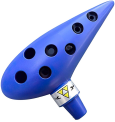
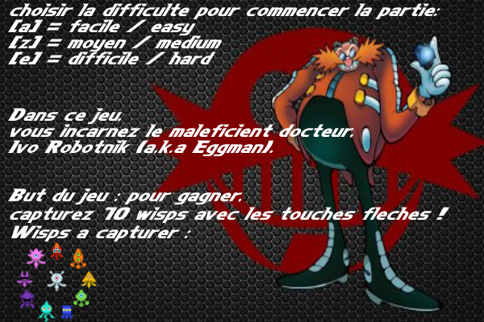
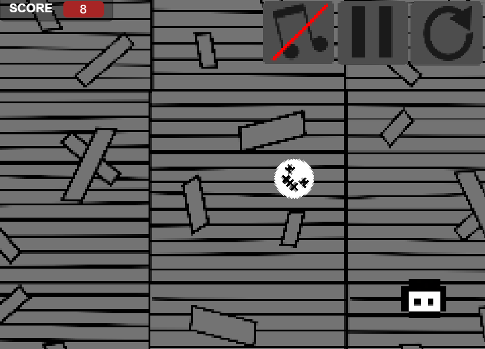

Jeux Video
|
cliquez sur les images,
c'est fait pour !
(les icones en haut à gauche vous mènent vers une documentation)
 Le Projet Retro, un jeu commun programme avec Game Maker 2 :
Le Projet Retro, un jeu commun programme avec Game Maker 2 : Le projet Retro est un jeu produit en commun par une petite équipe de lycéens, que j’ai codé en GameMaker 2 (je transitionne actuellement vers Unity).
Pour organiser la production du jeu, j’ai créé un serveur discord qui est dédié à la fois :
• À la conception de ce jeu par notre équipe composée de lycéens, avec une catégorie par section (Dev, Art, Musique...)
• Au beta-testing du jeu (tickets)
Jouer au jeu.png "Jouer à Zelda ODAL")
Serveur du jeu

OST du jeu 
J'ai conçu ce jeu simple sur P5.js, dans le cadre d'un projet de groupe de NSI.
Attention, il vous faudra cliquer sur l'écran de jeu avant de pouvoir utiliser votre clavier !
Pour programmer ce jeu, nous avons utilisé un serveur discord ou nous avons mis en ligne chaque nouvelle version,
sauvegardant régulièrement, et commentant le code pour qu'il soit clair.
(heureusement d'ailleurs, car l'une d'entre elle a complètement planté,
et on n'a pas pu la récupérer)
Jouer au jeu (Itch)
Jouer au jeu (GameJolt)
Survive the night :
This is a more personal reskin of a horror game I previously made,
so as for this game to be the "spiritual" successor to my Bendy fangame Bendy Run II.
The gameplay is different, the code is different, the art is different, the sound is different :
It's a brand new game, with brand new modes (minigames)
all instructions can be found in-game in the pause menu by hovering over the "i" icon/pressing the "i" key on your keyboard.
Jouer au jeu